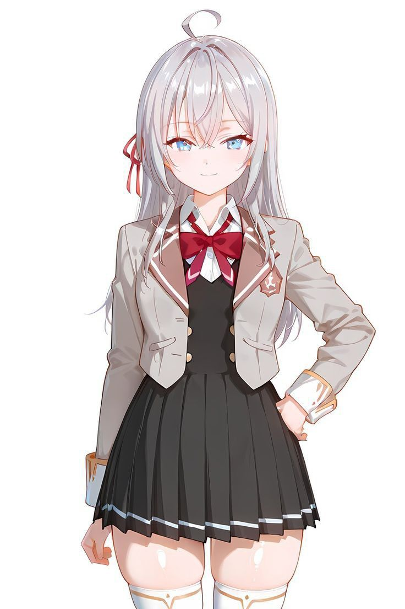

01 / 03
✦✧
hai, aku alya!

Alisa Mikhailovna Kujou
The Quiet Achiever
Kelas 1-A · Akademi Swasta Seirei
Siswi blasteran Rusia-Jepang yang genius, mandiri, dan menawan. Di balik julukan Putri yang Menyendiri, ia menyimpan sisi tsundere yang hangat.
Cita-cita Ketua OSIS di Akademi Swasta Seirei
“
Lakukan segala hal dengan kemampuan terbaikmu tanpa harus bergantung pada bantuan orang lain.